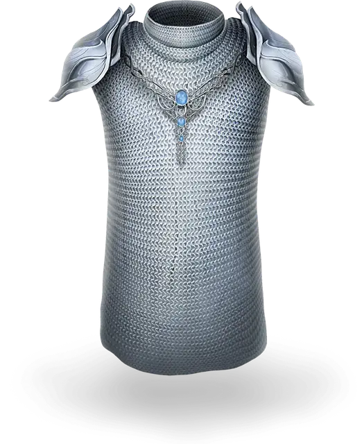

Эльфийская кольчуга
Elven Chain
Доспех (кольчужная рубаха), редкий

Рекомендованная стоимость 501-5 000 зм
Вы получаете бонус +1 к КД, когда носите этот доспех. Считается, что вы владеете навыком ношения этого доспеха, даже если не владеете навыком ношения средних доспехов.